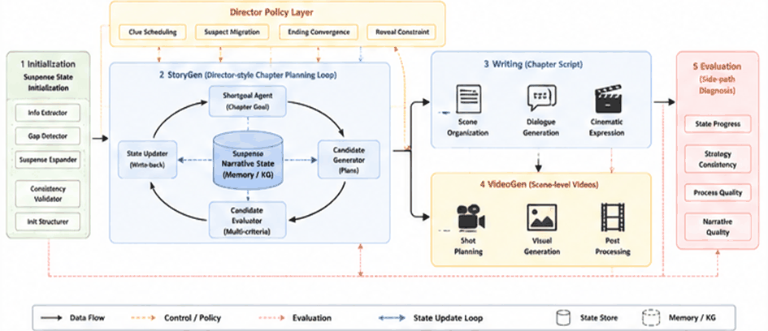

背景
现有系统能生成剧本，但一写长，三件事同时失控
01悬念推进失控
线索不断新增却很少回收，核心真相容易被提前说漏，写到后面收不住尾。
02人物认知不一致
角色、观众与真相侧的信息差没人管，谁该知道什么、谁被误导过，跨章节对不上。
03创作控制粒度粗糙
只能给一句提示词，没法按章节下达"这章该投线索、该移嫌疑还是该收尾"的指令。
做了什么
给系统装上一个记状态的本子，和一个按状态下指令的导演
在现有研究基础上，把多智能体与知识图谱做深度融合，搭一套能对长篇剧本做动态规划的生成系统。
核心方法
悬疑叙事状态建模
把人物认知、线索状态、嫌疑关系与真相揭示节奏写成可更新的显式状态。每写完一章就写回，下一章读它开工——故事从此有"当前进度"，而不只是一段前文。
核心方法
导演子策略机制
在生成候选章节之前先下约束：线索调度管投放与回收，嫌疑迁移管"谁能变可疑、变化多大"，终局门控管什么时候可以揭示。把导演判断变成可执行的规则。
进行中 / 规划
往文旅扩，并做成平台
进一步引入敦煌文化知识与文化约束，让同一套框架生成悬疑、边塞爱国、爱情、亲情等多类型文旅剧本；后续搭可视化剧本生成平台，让用户在前端完成创作需求配置、剧情规划与剧本生成。
技术
怎么搭的
- 用 Python 基于 HAWK 多智能体框架，AutoGen 组织智能体协作不同智能体分别负责初始化补全、章节规划、剧本改写与镜头抽象，按状态串成一条闭环。
- 用 Neo4j 存结构化记忆，搭角色—情节知识图谱统一管理角色认知、线索状态、嫌疑关系与叙事阶段，跨章节读取时不必重读全文。
- 图谱只做检索与压缩，主状态另有其一知识图谱负责"查得快"，状态文件负责"说了算"，两边分工明确，减少跨章节信息冲突。
